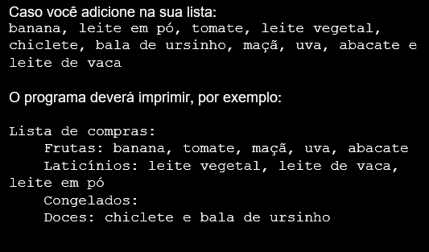

Então hoje, para facilitar a sua ida ao supermercado, você deve criar um programa em Javascript que perguntará se você deseja adicionar uma comida na sua lista de compras, e você deve poder responder com sim ou não.
Em seguida, ele perguntará qual comida você deseja inserir, e você digitará o nome dela, como por exemplo batata.
Depois, ele deverá perguntar em qual categoria essa comida se encaixa, com algumas opções já pré-definidas, como frutas, laticínios, congelados, doces e o que mais você achar interessante. Assim, você poderá separar tudo no seu devido grupo.
Por fim, caso você não queira mais adicionar nada na lista de compras e responder não na primeira pergunta, ele irá exibir uma lista com todos os itens agrupados, da seguinte forma:
